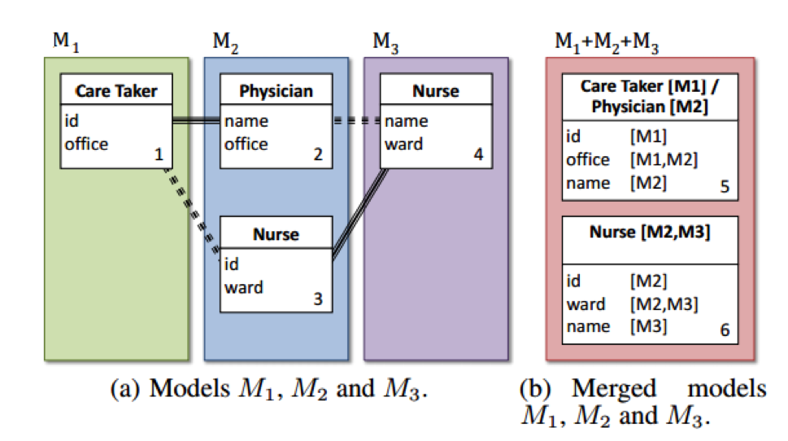

<section class="background">
    <div id="tips-container">
        <p>
            N-way matching is the process of combining multiple software models into one.


            An example of n-way matching is depicted in below, in which three mockups of a hospital system (i.e, M1, M2, M3) are grouped
            together via dotted and solid lines: <br>

            <br>

            Although the problem has practical importance in software engineering practices, it is considered
            intractable; that is, the problem is deemed difficult for a computer to solve.
            Matchmakers empowers people to solve n-way matching, by encoding the problem as a cute game.

        </p>
        <br>
        <div class="text-center">
            <h1>Related Papers and Talks</h1>
        </div>
        <p>Matchmakers: A Game for Crowdsourcing Solutions to an NP-hard Problem. MIT Undergraduate Research Technology Conference. 2016. [<a href="https://youtu.be/f1iN_vqPRdI">Link</a>]</p>
        <p>Chung C., Matsuoka A., Yang Y., Rubin J., Chechik M. Serious Games for NP-hard Problems: Challenges and Insights. GAS at ICSE’16. [<a href="http://dl.acm.org/citation.cfm?id=2896963">Link</a>]</p>
        <p>Rubin J., Chechik M. N-way Model Merging. FSE. 2013. [<a href="http://people.csail.mit.edu/mjulia/publications/N-Way_Model_Merging_2013.pdf">Link</a>]</p>


        <!--<div class="ui bulleted list">-->
            <!--<div class="item">-->
                <!--Select elements where most of its elements are shared with your current group. These elements are highlighted in blue.-->
            <!--</div>-->
            <!--<div class="item">-->
                <!--Select elements that are unhappy (have a low red bar).-->
            <!--</div>-->
            <!--<div class="item">-->
                <!--Make use of the suggestion button! It will highlight elements that are similar to your current group.-->
            <!--</div>-->
            <!--<div class="item">-->
                <!--Pick elements that have the same colored bar.-->
            <!--</div>-->
        <!--</div>-->

    </div>
</section>
